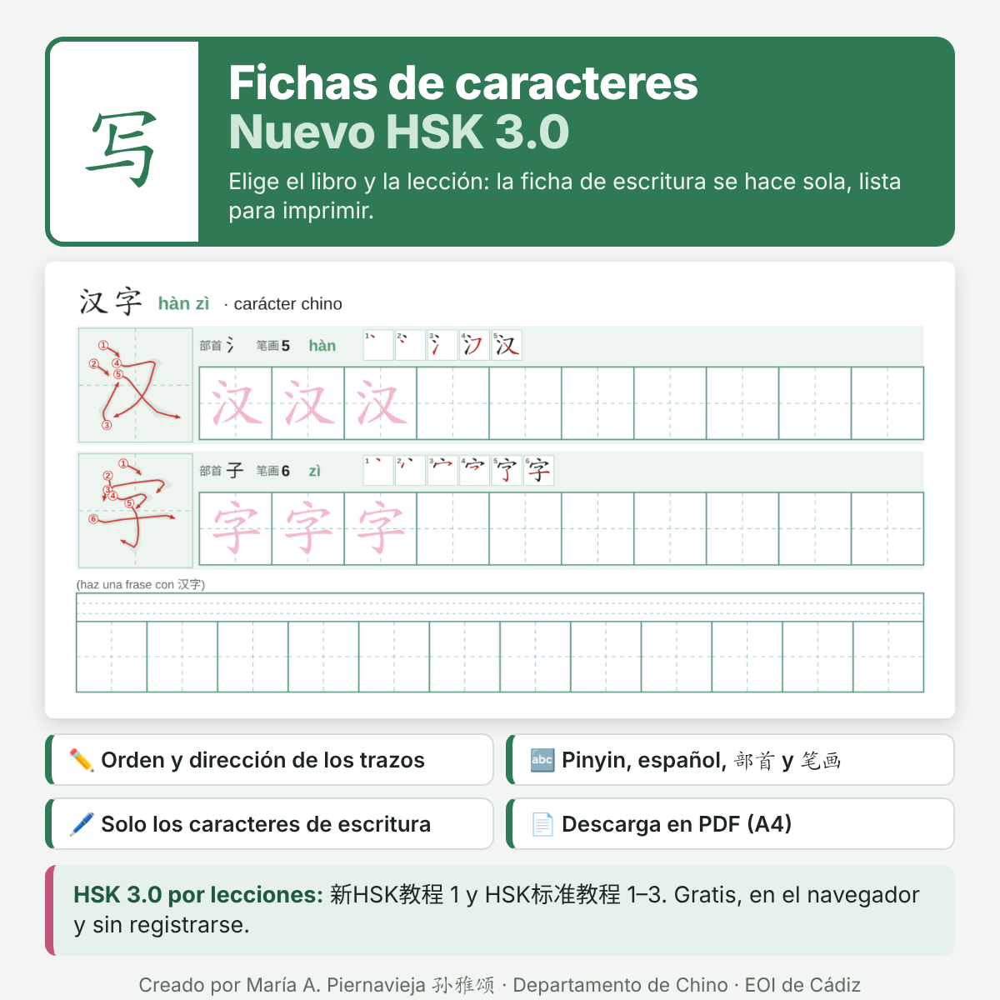

Fichas de caracteres · Nuevo HSK 写汉字
Crea fichas de escritura listas para imprimir, con el orden y la dirección de cada trazo, pinyin, significado en español, radical (部首) y número de trazos.
- Elige el libro (新HSK教程 1 o HSK标准教程 1, 2 y 3) y la lección.
- Si quieres, marca «Solo los caracteres que hay que saber escribir» (lista oficial de escritura del nuevo HSK).
- Elige «Por palabras» (con una fila para hacer una frase) o «Carácter a carácter».
- Pulsa Descargar PDF o Imprimir.
También puedes escribir tus propios caracteres, aunque no uses estos libros, y corregir cualquier dato de la tabla antes de imprimir.
Abrir las fichas →